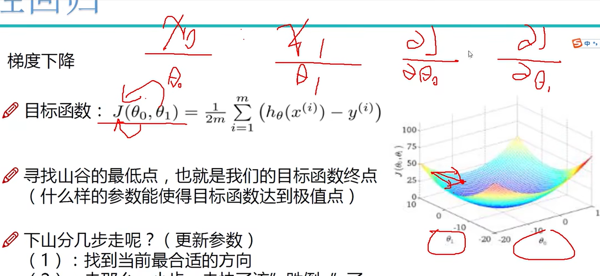

课程简介
线性回归
线性回归问题概述
机器学习中分为两种问题: 1.回归问题;2.分类问题
- 分类: 比如去银行贷款,银行贷或不贷是一个分类问题(有明确类别)
- 回归: 去银行贷款,贷多少(有一个区间,要找出大概是哪个区间,哪个值)

误差项定义
θ1 和 θ2 是权重项,θ0 是偏置项;θ1 和 θ2 改变,线的角度改变,θ0 改变,整个线的高度改变
所有数据的操作,都是对矩阵进行一系列变换
为了将 y = θ1x + θ2x + θ0 转为矩阵运算,我们添加一个 x0,改为 y = θ1x + θ2x + θ0*x0
有时候看到别人的数据添加了一列全是 1 的,其实是为了把数据转为矩阵,方便计算
给机器数据和目标函数,让机器去学习,找出什么参数最符合该目标函数
独立同分布项的意义
似然函数的作用
独立同分布的情况下，联合概率密度 = 边缘概率密度的乘积
我们不是想求 L(θ)或 ㏒(L(θ))，这里 θ 是一组向量，我们要求其中的极值点对应的 θ。
参数求解
Xθ 是矩阵，现在要求 θ 为何时，目标函数值最小
矩阵.T * 矩阵 => 对称矩阵
为了求解最小值，则要求 J(θ)对 θ 求偏导的极值点 (&J(θ)/&(θ) = 0)
对称矩阵 A 乘 θ 和 θ 转置然后对 θ 求偏导 => &(θ^T * A * θ)/ &(θ) = 2 * A * θ
> 0 = x^T * x * θ - x^T * y
> x^T * x * θ = x^T * y
两边乘(x^T * x)^-1，即乘(x^T * x)的逆矩阵，得1
> 1 * θ = (x^T * x)^-1 * x^T * y
得出这个结果，可以根据已知量求未知量 θ
这个式子有些问题：1.没有体现机器学习的学习的过程（渐进地改变某些值）；2.不是所有矩阵的逆都能成立
梯度下降
将线性回归公式当作特例（明确地可以求解），因为一般机器学习问题无法求出这种明确的解
当值梯度下降到最低点附近的小范围波动时，处于饱和状态，loss 不会再大幅度改变，梯度下降基本完成
参数更新方法
梯度下降对不同样本参数分别进行求解（偏导），然后共同决定下降的点位。θ0 对应 x0，θ1 对应 x1，x 之间没有关联，则 θ 之间也是。

因为梯度下降是往反方向（导数的负值），所以加上负号变成正的式子(θj + xxx)
优化参数设置
小批量梯度下降法的 α 参数表示学习率
线性回归实现
线性回归整体模块概述
首先准备数据 data，然后进行预处理（归一化、标准化，让维度、数据范围小一些），然后将每个特征 x 对应的 0 求出来
初始化步骤
import numpy as np
# . -> ./
from ..utils.features import prepare_for_training
class LinearRegression:
def __init__(self, data, labels, polynomial_degree=0, sinusoid_degree=0, normalize_data=True):
"""
初始化
1. 数据预处理
2. 得到所有特征个数
3. 初始化参数矩阵
:param data: 数据
:param labels: 标签
:param polynomial_degree:
:param sinusoid_degree:
"""
# 预处理
(data_processed, features_mean, features_deviation) = prepare_for_training(data,
polynomial_degree,
sinusoid_degree,
normalize_data),
# 预处理完的data
self.data = data_processed
self.labels = labels
# mean
self.features_mean = features_mean
# std
self.features_deviation = features_deviation
self.polynomial_degree = polynomial_degree
self.sinusoid_degree = sinusoid_degree
self.normalize_data = normalize_data
# 算需要求多少个θ
num_features = self.data.shape[1] # 列数
self.theta = np.zeros((num_features, 1))
实现梯度下降优化模块
θ 和 x 的矩阵，θ 转置后，可以实现 θi 和 Xi 对应相乘
class LinearRegression:
def __init__(self, data, labels, polynomial_degree=0, sinusoid_degree=0, normalize_data=True):
"""
初始化
1. 数据预处理
2. 得到所有特征个数
3. 初始化参数矩阵
:param data: 数据
:param labels: 标签
:param polynomial_degree:
:param sinusoid_degree:
"""
# 预处理
(data_processed, features_mean, features_deviation) = prepare_for_training(data,
polynomial_degree,
sinusoid_degree,
normalize_data),
# 预处理完的data
self.data = data_processed
self.labels = labels
# mean
self.features_mean = features_mean
# std
self.features_deviation = features_deviation
self.polynomial_degree = polynomial_degree
self.sinusoid_degree = sinusoid_degree
self.normalize_data = normalize_data
# 算需要求多少个θ
num_features = self.data.shape[1] # 列数
self.theta = np.zeros((num_features, 1))
# alpha: 学习率,num_iterations: 迭代次数
def train(self, alpha, num_iterations=500):
# 梯度下降优化步骤
def gradient_step(self, alpha):
# 有多少个数据
num_examples = self.data.shape[0]
# 预测值
prediction = LinearRegression.hypothesis(self.data, self.theta)
# 预测值 - 真实值
delta = prediction - self.labels
# 更新参数
theta = self.theta
# 不用for循环,而是使用矩阵来实现相乘
theta = theta - alpha * (1 / num_examples) * (np.dot(delta.T, self.data)).T
# 预测
@staticmethod # 静态方法
def hypothesis(data, theta):
# θ * x
predictions = np.dot(data, theta)
return predictions
损失与预测模块
import numpy as np
# . -> ./
from ..utils.features import prepare_for_training
class LinearRegression:
def __init__(self, data, labels, polynomial_degree=0, sinusoid_degree=0, normalize_data=True):
"""
初始化
1. 数据预处理
2. 得到所有特征个数
3. 初始化参数矩阵
:param data: 数据
:param labels: 标签
:param polynomial_degree:
:param sinusoid_degree:
"""
# 预处理
(data_processed, features_mean, features_deviation) = prepare_for_training(data,
polynomial_degree,
sinusoid_degree,
normalize_data)
# 预处理完的data
self.data = data_processed
self.labels = labels
# mean
self.features_mean = features_mean
# std
self.features_deviation = features_deviation
self.polynomial_degree = polynomial_degree
self.sinusoid_degree = sinusoid_degree
self.normalize_data = normalize_data
# 算需要求多少个θ
num_features = self.data.shape[1] # 列数
self.theta = np.zeros((num_features, 1))
def train(self, alpha, num_iterations=500):
'''
训练,执行梯度下降
:param alpha:
:param num_iterations:
:return:
'''
# alpha: 学习率,num_iterations: 迭代次数
cost_history = self.gradient_descent(alpha, num_iterations)
return self.theta, cost_history
def gradient_descent(self, alpha, num_iterations):
'''
迭代模块,计算误差，更新参数
:param alpha: 学习率
:param num_iterations: 样本数
:return: 历史误差
'''
cost_history = []
for i in range(num_iterations):
# 更新参数
self.gradient_step(alpha)
# 记录损失
cost_history.append(self.cost_function(self.data, self.labels))
return cost_history
# 梯度下降优化步骤
def gradient_step(self, alpha):
'''
梯度下降参数更新计算方法
:param alpha: 学习率
:return:
'''
# 有多少个数据
num_examples = self.data.shape[0]
# 预测值
prediction = LinearRegression.hypothesis(self.data, self.theta)
# 预测值 - 真实值
delta = prediction - self.labels
# 更新参数
theta = self.theta
# 不用for循环,而是使用矩阵来实现相乘
theta = theta - alpha * (1 / num_examples) * (np.dot(delta.T, self.data)).T
# 计算损失
def cost_function(self, data, labels):
'''
损失计算方法
:param data:
:param labels: 真实值
:return:
'''
# 样本个数
num_example = data.shape[0]
# 预测值 - 真实值
loss = LinearRegression.hypothesis(self.data, self.theta) - labels
# 使用误差算法 -> 可以自己实现其他误差算法
# 矩阵平方 r*r.T
cost = (1 / 2) * np.dot(loss.T, loss)
return cost[0][0]
@staticmethod # 静态方法
def hypothesis(data, theta):
# θ * x
predictions = np.dot(data, theta)
return predictions
def get_cost(self, data, labels):
# 预处理
data_processed = prepare_for_training(data,
self.polynomial_degree,
self.sinusoid_degree,
self.normalize_data)[0]
# 得到当前损失
return self.cost_function(data_processed, labels)
def predict(self, data):
'''
用训练的参数模型,预测得到回归值结果
:param data:
:return:
'''
# 预处理
data_processed = prepare_for_training(data,
self.polynomial_degree,
self.sinusoid_degree,
self.normalize_data)[0]
predictions = LinearRegression.hypothesis(data_processed, self.theta)
return predictions